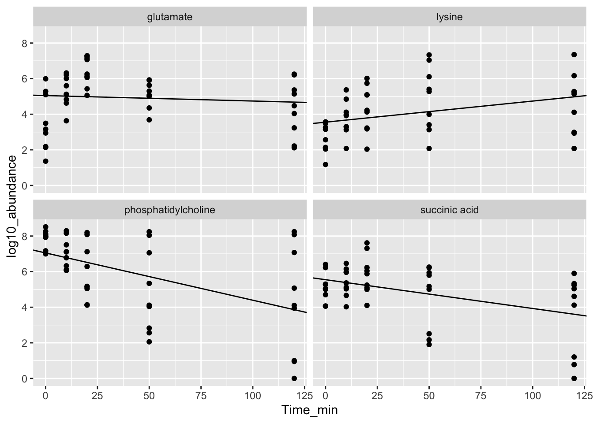

Answers to Exercises
4 R Syntax
# 3. Calculate the sum of 2 and 3.
2 + 3
# 4. Evaluate if 0.5 is equal to 1 divided by 2.
0.5 == 1 / 2
# 5. Define a variable that is is 98.6 degrees in Fahrenheit.
fahrenheit_temp <- 101
# 6. Construct an if-else statement to determine if the temperature indicates a fever (temperature greater than or equal to 100). If it does print "The temperature indicates a fever." If the temperature is less than 100, print "The temperature does not indicate a fever." (hint: to print "ok", the function is print("ok"))
if (fahrenheit_temp >= 100){
print("The temperature indicates a fever.")
}else{
print("The temperature does not indicate a fever.")
}
# 8. Create a function to test if a temperature is a fever called `fever_checker` the prints above, but can be reused
fever_checker <- function(fahrenheit_temp) {
if (fahrenheit_temp >= 100){
print("The temperature indicates a fever.")
}else{
print("The temperature does not indicate a fever.")
}
}
# 9. Use similar logic to print if a temperature is the homeostatic range for human beings (97.7–99.5).
homeostatic_range_check <- function(fahrenheit_temp){
if (fahrenheit_temp >= 97.7 && fahrenheit_temp <= 99.5){
print("In homeostatic range!")
} else{
print("Outside homeostatic range!")
}
}
# 10. Advanced exercise... add TRUE / FALSE returns (i.e. return TRUE, return FALSE) to the functions and create a function that combines both called `temperature_check`. That gives us info on the what our temperature means (i.e., is it homeostatic, is it a fever, are we possibly dead (temperature way too low??)
# ...5 R Objects
# John Doe
# 2023-06-02
# Institution Inc.
#
# Data Object Exercises
# 1. Construct the following vector and store as a variable.
str_gbu <- c('red', 'green', 'blue')
# 2. Extract the 2nd element in the variable.
str_gbu[2]
# 3. Construct a numerical vector of length 5, containing the AREA of circles
# with integer RADIUS 1 to 5. Remember PEMDAS.
area <- (1:5) ^ 2 * pi
# 4. Extract all AREA greater than 50.
area[which(area > 50)]
# 5. Create a data.frame consisting of circles with integer RADIUS 1 to 5, and their AREA.
radius <- 1:5
df <- data.frame(
radius = radius,
area = (radius) ^ 2 * pi
)
df
# 6. Extract all AREA greater than 50 from the data.frame.
w <- which(df$area > 50)
df[w,]5 R Objects MORE
# John Doe
# 2023-06-02
# Institution Inc.
#
# More Data Object Exercises
# Exercise #1 -- Working with Variables You are running an LC-MS experiment
# using a 60 min LC gradient
# 1.1 Create a variable called gradient_min to hold the length of the gradient
# in minutes.
gradient_min <- 60
# 1.2 Using the gradient length variable you just created, convert it to seconds
# and assign it to a new variable with a meaningful name.
gradient_sec <- gradient_min * 60
# Exercise #2 -- Working with Vectors
# Continuing from Exercise #1...
# 2.1 Imagine you conducted additional experiments, one with a 15 minute gradient
# and one with a 30 min gradient. Create a vector to hold all three gradient
# times in minutes, and assign it to a new variable.
gradients_min <- c(15, 30, 60)
# 2.2 Convert the vector of gradient times to seconds. How does this conversion
# compare to how you did the conversion in Exercise 1?
gradients_sec <- gradients_min * 60
# Exercise #3 -- More Practice with Vectors
# 3.1 The following vector represents precursor m/z values for detected features
# from your experiment:
prec_mz <- c(968.4759, 812.1599, 887.9829, 338.5294, 510.2720,
775.3455, 409.2369, 944.0385, 584.7687, 1041.9523)
# - How many values are there?
length(prec_mz)
# - What is the minimum value? The maximum?
min(prec_mz)
max(prec_mz)
# Exercise #4 -- Vectors and Conditional Expressions
# 4.1 Using the above vector of precursor values, write a conditional expression
# to find the values with m/z \< 600. What is returned by this expression? A
# single value or multiple values? A number or something else?
prec_mz < 600
# 4.2 Use this conditional expression to get the precursor values with m/z \< 600
prec_mz[prec_mz < 600]
# 4.3 Consider a new vector of data that contains the charge states of the same
# detected features from above:
prec_z <- c(2, 4, 2, 3, 2, 2, 2, 2, 2, 2)
# - Write a conditional expression to find which detected features that have
# a charge state of 2.
prec_z == 2
# 4.4 Write an expression to get the precursor m/z values for features having
# charge states of 2?
prec_mz[prec_z == 2]6 Tidyverse
- Read in the
bacterial-metabolites_dose-simicillin_tidy.csvdata set.
url <- "https://raw.githubusercontent.com/jeffsocal/ASMS_R_Basics/main/data/bacterial-metabolites_dose-simicillin_tidy.csv"
download.file(url, destfile = "./data/bacterial-metabolites_dose-simicillin_tidy.csv")## Rows: 180 Columns: 5
## ── Column specification ─────────────────────────────────────────────────────────────────────
## Delimiter: ","
## chr (2): Organism, Metabolite
## dbl (3): Dose_mg, Time_min, Abundance
##
## ℹ Use `spec()` to retrieve the full column specification for this data.
## ℹ Specify the column types or set `show_col_types = FALSE` to quiet this message.- How many organisms, metabolites, dose levels, and time points are in the data? How many rows are in the data table? What is the overall study design?
orgs <- unique(dat$Organism)
n_orgs <- length(unique(orgs))
metabs <- unique(dat$Metabolite)
n_metabs <- length(unique(metabs))
doses <- unique(dat$Dose_mg)
n_doses <- length(unique(doses))
time_pts <- unique(dat$Time_min)
n_time_pts <- length(unique(time_pts))
nrow(dat)## [1] 180## [1] TRUE- Which metabolite has the highest overall mean abundance?
dat %>%
group_by(Metabolite) %>%
summarize(mean_abundance = mean(Abundance)) %>%
arrange(desc(mean_abundance))## # A tibble: 4 × 2
## Metabolite mean_abundance
## <chr> <dbl>
## 1 phosphatidylcholine 50221415.
## 2 succinic acid 1855206.
## 3 glutamate 1817320.
## 4 lysine 1349963.- Does this metabolite have the highest mean abundance for each organism, or is there differences between organisms?
dat %>%
group_by(Organism, Metabolite) %>%
summarize(mean_abundance = mean(Abundance)) %>%
arrange(Organism, desc(mean_abundance))## `summarise()` has grouped output by 'Organism'. You can override using the `.groups`
## argument.## # A tibble: 12 × 3
## # Groups: Organism [3]
## Organism Metabolite mean_abundance
## <chr> <chr> <dbl>
## 1 e coli phosphatidylcholine 67749754.
## 2 e coli glutamate 2323045.
## 3 e coli succinic acid 1906850.
## 4 e coli lysine 1519827.
## 5 p aeruginosa phosphatidylcholine 77078132.
## 6 p aeruginosa succinic acid 3525432.
## 7 p aeruginosa glutamate 2902178
## 8 p aeruginosa lysine 2336119.
## 9 staph aureus phosphatidylcholine 5836359.
## 10 staph aureus glutamate 226736.
## 11 staph aureus lysine 193944.
## 12 staph aureus succinic acid 133337.- Is there an overall trend of mean abundance values vs. time point? What about abundance vs. dose?
## # A tibble: 5 × 2
## Time_min mean_abundance
## <dbl> <dbl>
## 1 0 26639946.
## 2 10 11726915.
## 3 20 11929517.
## 4 50 9389061.
## 5 120 9369441.## # A tibble: 3 × 2
## Dose_mg mean_abundance
## <dbl> <dbl>
## 1 0 24454975.
## 2 10 9900030.
## 3 20 7077924.- Using the example code at the beginning of this Chapter (using the Dever climate data), compute a linear fit of log10 abundance vs. time point for each metabolite and plot the results.
dat <- dat %>%
mutate(log10_abundance = log10(Abundance))
lm_func <- function(data) {
lm(log10_abundance ~ Time_min, data = data)
}
dat_lm <- dat %>%
# dplyr
group_by(Metabolite) %>%
# tidyr
nest() %>%
# dplyr, purrr: apply the function to each nested data frame
mutate(model = map(data, lm_func)) %>%
# dplyr, broom, purrr: extract the coefficients from each model
mutate(tidy = map(model, broom::tidy)) %>%
# tidyr
unnest(tidy) %>%
ungroup() %>%
# dplyr, stringr: clean-up the terms
mutate(term = term %>% str_replace_all("\\(|\\)", "")) %>%
# dplyr: retain only specific columns
select(Metabolite, term, estimate) %>%
# tidyr: convert from a long table to a wide table
pivot_wider(names_from = 'term', values_from = 'estimate') %>%
# dplyr: create a new column with the model slope (better name), just copy Time_min
mutate(model_slope = Time_min)
#ggplot2
ggplot(dat, aes(Time_min, log10_abundance)) +
# represent the data as points
geom_point() +
# use the linear model data to plot regression lines
geom_abline(data = dat_lm,
aes(slope = model_slope, intercept = Intercept)) +
# plot each year separately
facet_wrap(~Metabolite)
7 Data Wrangling
# John Doe
# 2023-06-02
# Institution Inc.
#
# Data Wrangling Exercises
# 1. Download the data.
url <- "https://raw.githubusercontent.com/jeffsocal/ASMS_R_Basics/main/data/bacterial-Metabolites_dose-simicillin_messy.xlsx"
download.file(url, destfile = "./data/bacterial-Metabolites_dose-simicillin_messy.xlsx")
# 2. Read in the messy bacteria data and store it as a variable.
library(tidyverse)
library(readxl)
tbl_bac <- "data/bacterial-Metabolites_dose-simicillin_messy.xlsx" %>% read_excel(col_names = TRUE)
# *In all proceeding exercises, pipe results from previous exercise into current
# exercise creating a single lone pipe for data processing*
# 3. Separate `Culture` column containing culture and dose into `culture` and
# `dose_mg_ml` columns.
tbl_bac %>%
separate(Culture, c("culture", "dose_mg_ml"), sep = " dose--")
# 4. Make `dose_mg_ml` column numeric by removing the text and change the column
# data type from character to numeric.
tbl_bac %>%
separate(Culture, c("culture", "dose_mg_ml"), sep = " dose--") %>%
mutate(dose_mg_ml = gsub("-mg/ml","", dose_mg_ml)) %>%
mutate(dose_mg_ml = as.numeric(dose_mg_ml))
# 5. Pivot the table from wide to long creating `metabolite`, `time_hr` & `abundance` columns.
tbl_bac %>%
separate(Culture, c("culture", "dose_mg_ml"), sep = " dose--") %>%
mutate(dose_mg_ml = gsub("-mg/ml","", dose_mg_ml)) %>%
mutate(dose_mg_ml = as.numeric(dose_mg_ml)) %>%
pivot_longer(cols = 4:13, names_to = "metabolite_time", values_to = "abundance") %>%
separate(metabolite_time, c("metabolite","time_hr"), sep="_runtime_")
# 6. Make sure `time_hr` contains just hours and not a mixture of days and hours.
tbl_bac %>%
separate(Culture, c("culture", "dose_mg_ml"), sep = " dose--") %>%
mutate(dose_mg_ml = gsub("-mg/ml","", dose_mg_ml)) %>%
mutate(dose_mg_ml = as.numeric(dose_mg_ml)) %>%
pivot_longer(cols = 4:13, names_to = "metabolite_time", values_to = "abundance") %>%
separate(metabolite_time, c("metabolite","time_hr"), sep="_runtime_") %>%
mutate(
time_hr = case_when(
grepl("hr", time_hr, ignore.case = TRUE) ~ as.numeric(gsub("hr", "", time_hr)),
grepl("day", time_hr, ignore.case = TRUE) ~ as.numeric(gsub("day", "", time_hr)) * 24
)
)
# 7. Remove the `User` column. See the cheat-sheet here:
# https://www.rstudio.com/wp-content/uploads/2015/02/data-wrangling-cheatsheet.pdf
tbl_bac %>%
separate(Culture, c("culture", "dose_mg_ml"), sep = " dose--") %>%
mutate(dose_mg_ml = gsub("-mg/ml","", dose_mg_ml)) %>%
mutate(dose_mg_ml = as.numeric(dose_mg_ml)) %>%
pivot_longer(cols = 4:13, names_to = "metabolite_time", values_to = "abundance") %>%
separate(metabolite_time, c("metabolite","time_hr"), sep="_runtime_") %>%
mutate(
time_hr = case_when(
grepl("hr", time_hr, ignore.case = TRUE) ~ as.numeric(gsub("hr", "", time_hr)),
grepl("day", time_hr, ignore.case = TRUE) ~ as.numeric(gsub("day", "", time_hr)) * 24
)
) %>%
select(-User)8 Data Visualization
# John Doe
# 2023-06-02
# Institution Inc.
#
# Data Visualization Exercises
# 1. If not already done, download *Bacterial Metabolite Data (tidy)* to use as
# an example data file.
url <- "https://raw.githubusercontent.com/jeffsocal/ASMS_R_Basics/main/data/bacterial-Metabolites_dose-simicillin_tidy.csv"
download.file(url, destfile = "./data/bacterial-Metabolites_dose-simicillin_tidy.csv")
# 2. Read in the dataset .csv using the `tidyverse` set of packages.
library(tidyverse)
tbl_bac <- "./data/bacterial-Metabolites_dose-simicillin_tidy.csv" %>% read_csv()
# 3. Create a Metabolite `Abundance` by `Time_min` ...
tbl_bac %>%
ggplot(aes(Time_min, Abundance)) +
geom_point()
# 4. ... facet by `Organism` and `Metabolite`...
tbl_bac %>%
ggplot(aes(Time_min, Abundance)) +
geom_point() +
facet_grid(Metabolite ~ Organism)
# 4. ... adjust the y-axis to log10, color by `Dose_mg`, and add a 50% transparent line ...
tbl_bac %>%
mutate(Dose_mg = Dose_mg %>% as.factor()) %>%
ggplot(aes(Time_min, Abundance)) +
geom_point(aes(color = Dose_mg)) +
geom_line(aes(color = Dose_mg), alpha = .5) +
facet_grid(Metabolite ~ Organism) +
scale_y_log10()
# 5. ... change the theme to something publishable, add a title, modify the x-
# and y-axis label, modify the legend title, adjust the y-axis ticks to show
# the actually measured time values, and pick a color scheme that highlights
# the dose value...
tbl_bac %>%
mutate(Dose_mg = Dose_mg %>% as.factor()) %>%
ggplot(aes(Time_min, Abundance)) +
geom_point(aes(color = Dose_mg)) +
geom_line(aes(color = Dose_mg), alpha = .5) +
facet_grid(Metabolite ~ Organism) +
scale_color_manual(values = c("grey", "orange", "red")) +
scale_y_log10() +
scale_x_continuous(breaks = unique(tbl_bac$Time_min)) +
labs(title = 'Bacterial Metabolite monitoring by LCMS in response to antibiotic',
subtitle = 'Conditions: metered dose of similicillin',
x = "Time (min)", y = "LCMS Abundance",
color = "Dose (mg)") +
theme_classic()